Datasets Page
Click the Datasets navigation tab at the top to access the datasets page.
Use the Datasets page to browse, search, filter, preview, and star your accessible Okera datasets.
Any dataset where you have any level of access appears in this list. Datasets to which you have no access will not appear at all.
Searching and Filtering Datasets
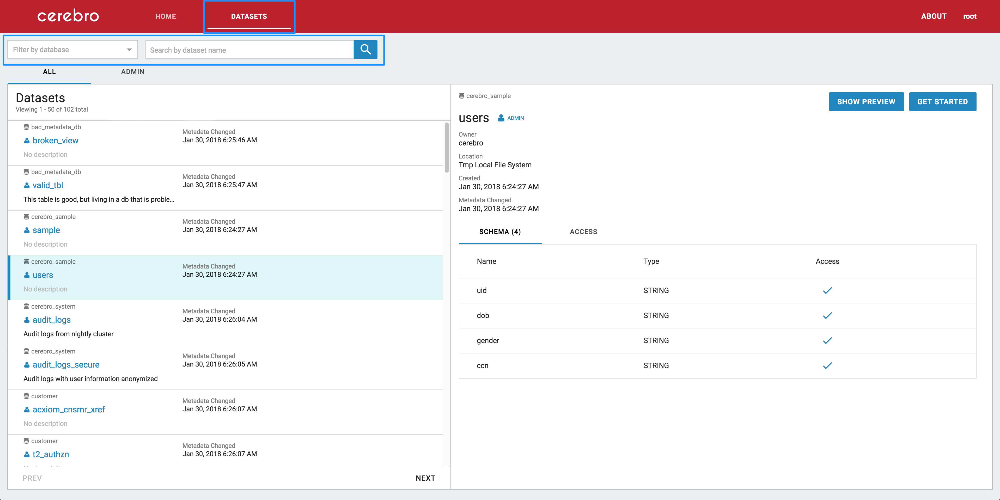
At the top of the page, you can select datasets search and filter options:
-
Search box
Search by dataset name. Any dataset name containing your input as a substring is displayed.
Tip: You can quickly clear this box with the ESC key.
-
Filter by database multi-select box
Filter the list to include only datasets in a particular database or set of databases.
-
Filter by User Tags multi-select box
Filter the list to include only datasets that are tagged as selected.
-
Filter by Starred datasets checkbox
Filter the list to show only datasets that you’ve starred.
-
Filter by Admin checkbox
Filter the list to show only datasets that you are Admin on (you have ALL access to these datasets).
What does Admin mean?
If you have ALL access on a particular object (database or dataset), you are considered an admin for that object within Okera. You will also see an “Admin” tag on the dataset details panel.
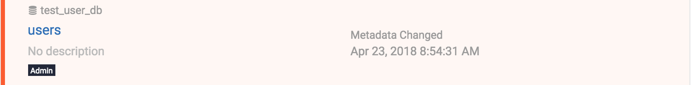
For more about administrative usage, see Portal for Admins.
Dataset Details
To display a details panel for a given dataset, click its dataset card in the list. The details panel will appear on the right side of the screen.
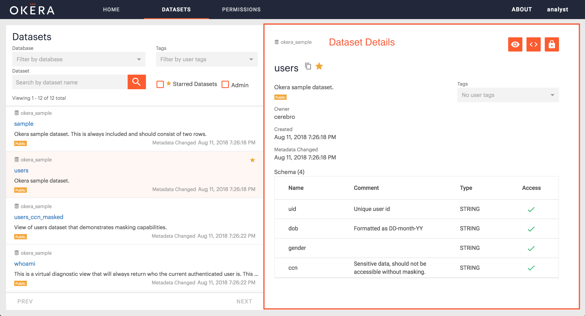
This page contains:
- The dataset’s metadata, including:
- Database name
- Dataset name
- Owner
- Location
- Description
- Created (the date and time the dataset was created)
- Metadata Changed (the date and time the metadata was last changed)
- View Definition (if dataset is an external view)
- Partitioning Columns (if dataset is partitioned)
- The dataset schema described in full:
- Total number of columns in the schema (next to ‘Schema’ tab)
- Partitioning Column (if dataset is partitioned)
- Each column in the dataset is shown, including:
- Name
- Type
- Access (whether you have read-access to view the cells in this column)
Note If a column’s name has a gray background, it is a partitioning column
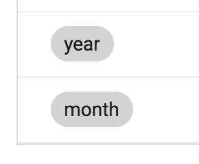
Complex Types in the Schema
Complex types will be marked as “STRUCT” datatype in the schema. All the nested child elements will appear underneath with the parent elements greyed out. See also Previewing Complex types.
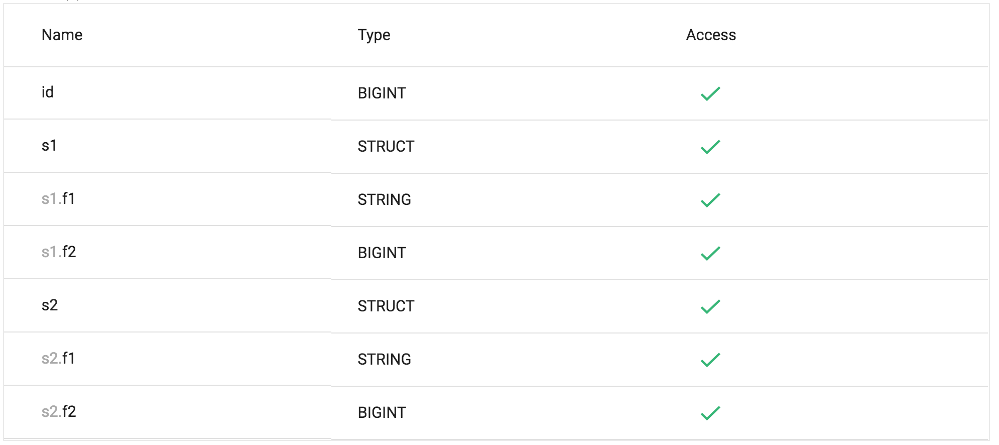
Column Access
If your schema looks similar to the table below, you do not have access to every column in the dataset.
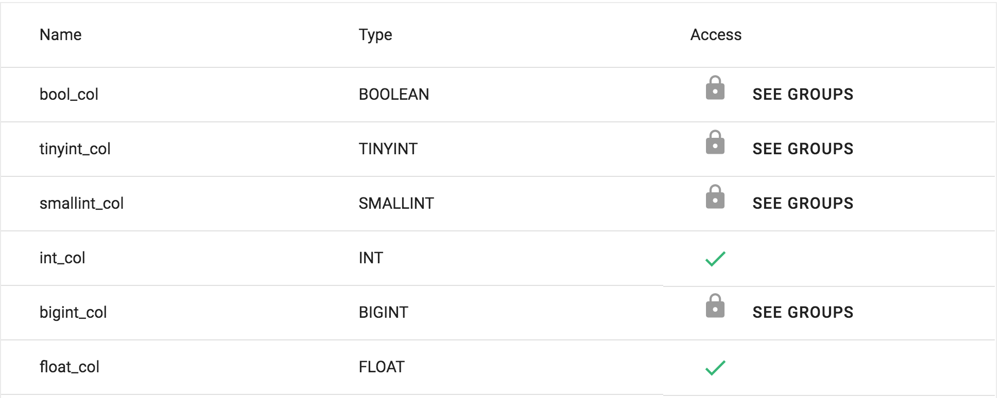
To display a list of groups with access to the data column, click See Groups associated with the applicable data column name. To gain access to that column’s data, you must be added to one of these groups.
Starring Datasets
Clicking on the star next to the dataset name will add that dataset to your “Starred datasets” list. You can see a list of your recently starred datasets on the homepage.
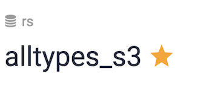
Adding User Tags
You can use the “Tags” input box to add your own personal tags to datasets. To create a new tag, simply select “Create option…”
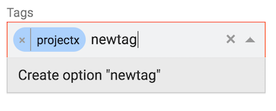
Note User tags are personal tags only visible to you. No other user will see them.
Dataset Action Menu
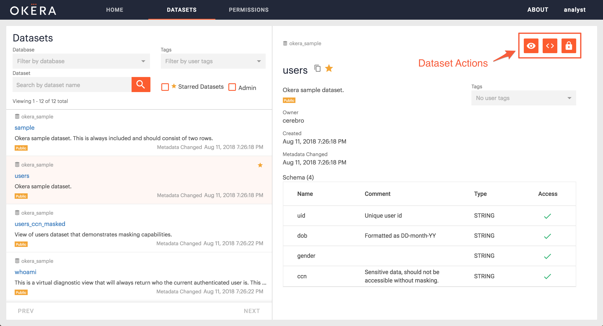
At the top right of the dataset details, you will see an Action menu with these options:
- Preview Dataset
- View Dataset usage snippets
- Open dataset in Permissions
- Open dataset in Workspace (Admins only)
Dataset Preview
To preview a dataset, click the Show Preview icon icon in the upper right of the details panel.
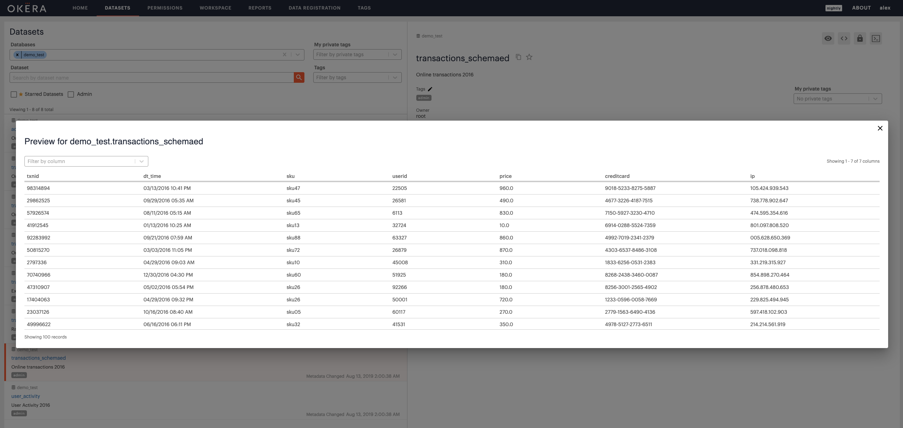
-
No more than 200 rows are shown (to view more, see “Dataset usage” below).
-
Column information with no access is not visible.
-
The modal can scroll vertically and horizontally.
Note In order to speed up preview for large tables with many partitions, preview only shows results from the last partition. If you observe no results, please verify there is data in the last partition.
Previewing Complex Types
When previewing a table with complex types, the data will be displayed as an expandable JSON structure. Simply click the + to expand the cell and reveal the data values.
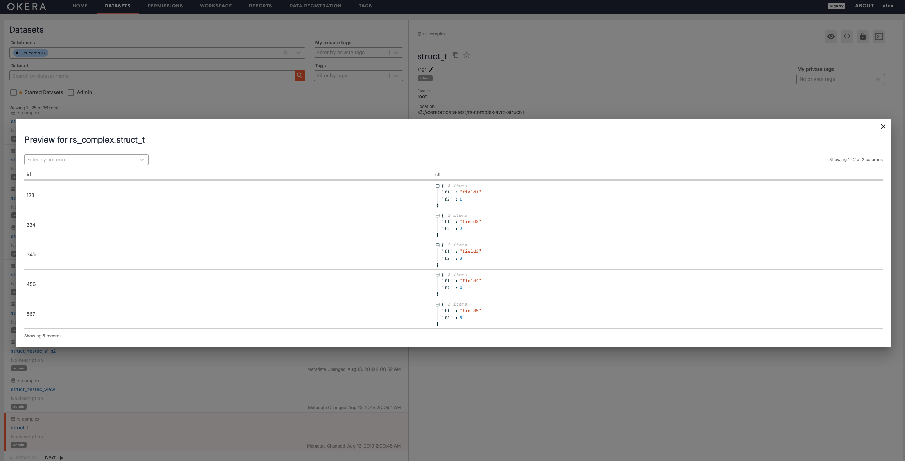
Get-Started Snippets
To start using a dataset, click View usage icon on the upper right of its details panel.
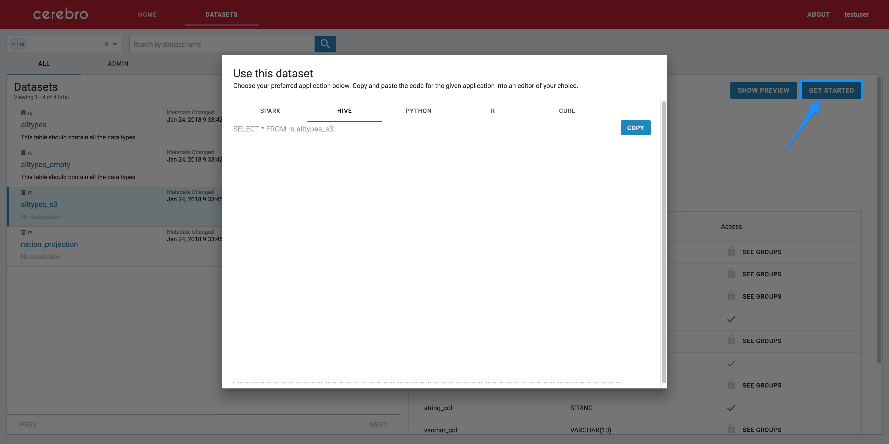
Sections of different sample code are displayed, such as for Spark, Hive, Python, R, and CURL. Click the tab of your choice to retrieve integration code suitable for your application.
Datasets with Errors
In the UI, datasets with errors are those that failed to load due to a problem with their metadata (e.g., unsupported datatype). Datasets with errors are listed alongside datasets that loaded properly. Clicking a failed dataset reveals the error message on the details panel on the right.
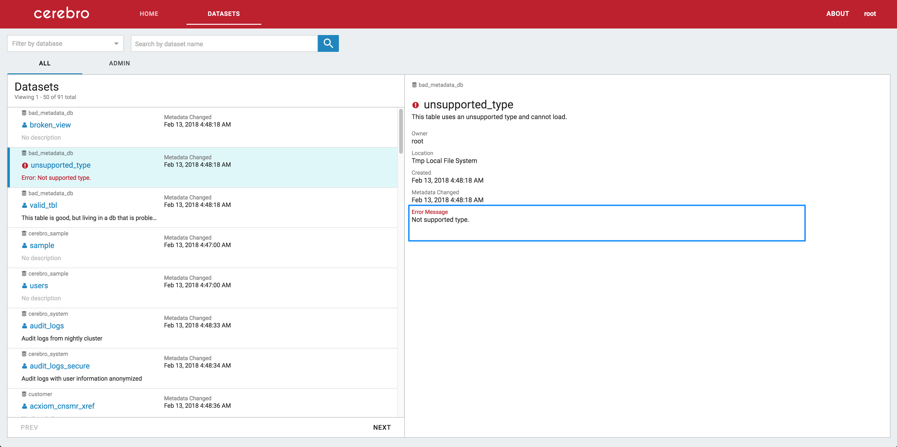
Note
There may be other datasets with issues in the Okera deployment. The UI only lists them here if there are metadata errors. Problems in view configuration or in the data itself are not visible in the datasets page.